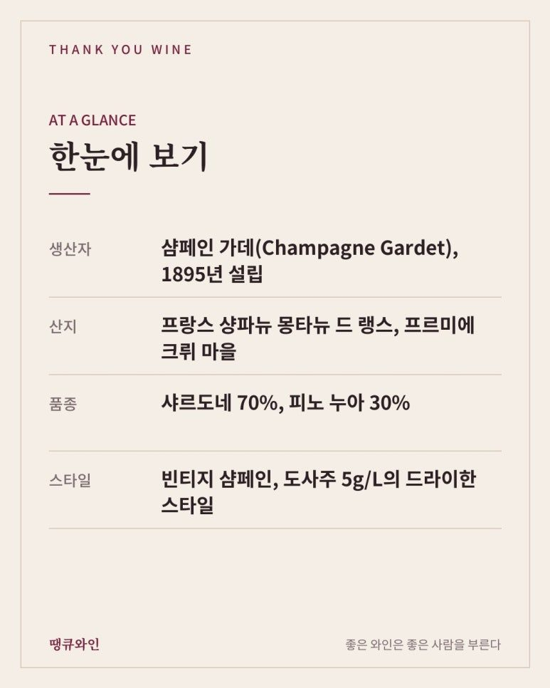
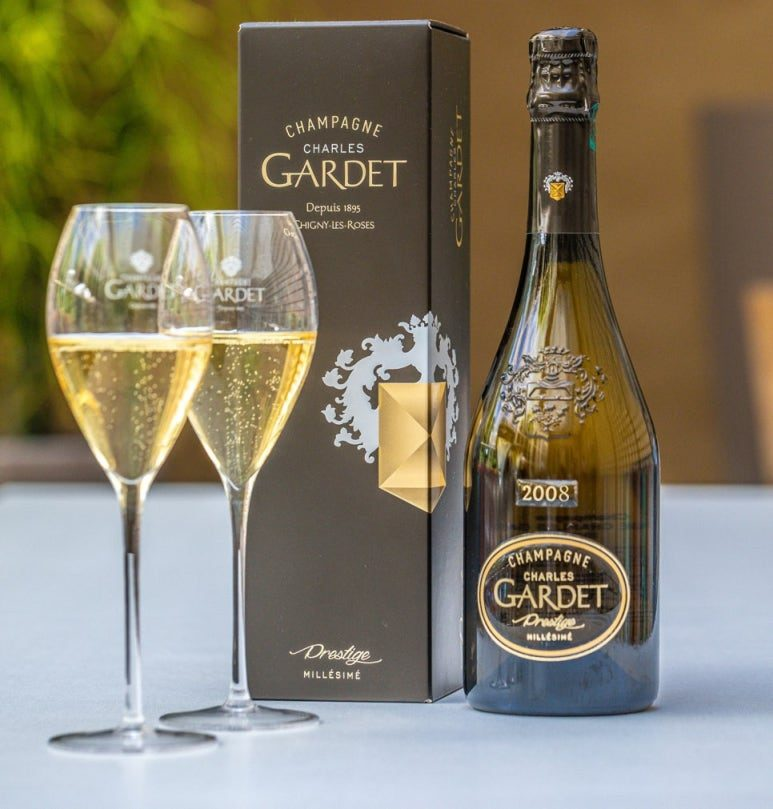
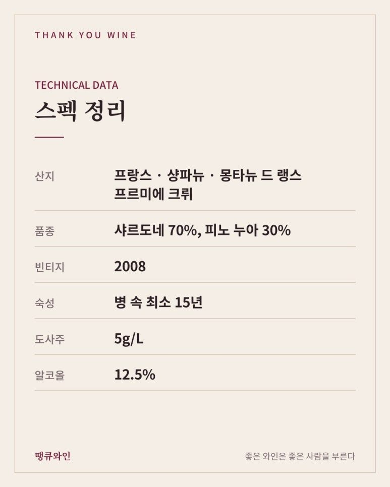
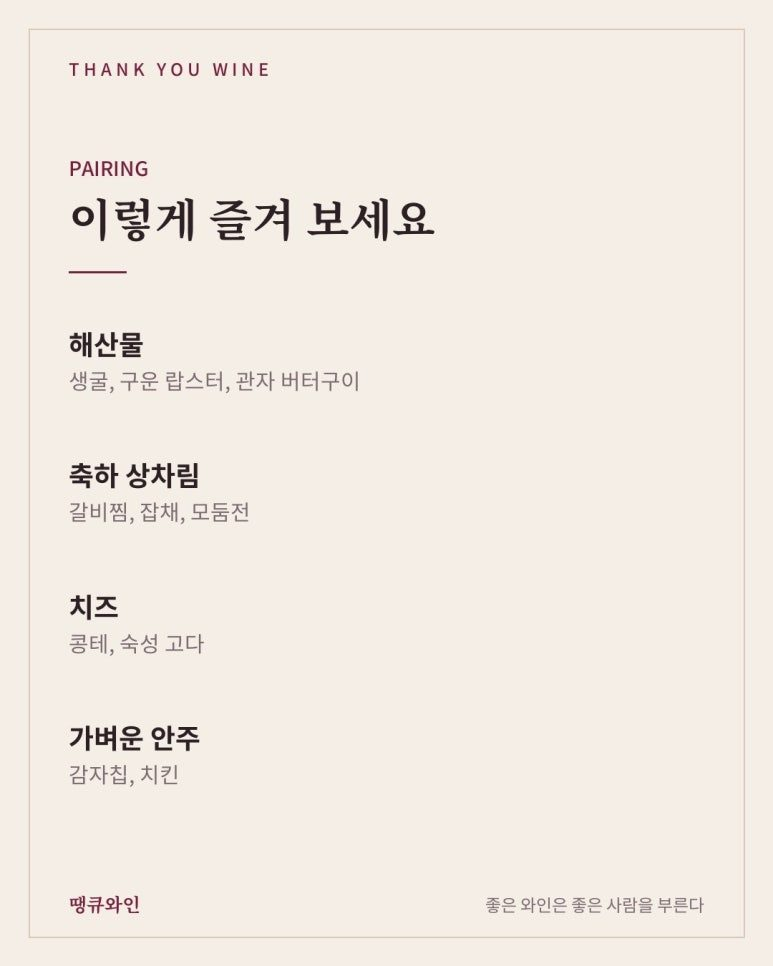
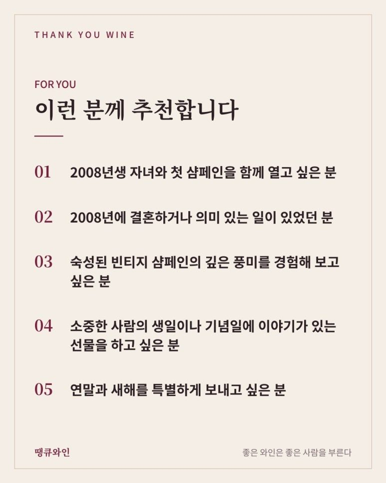

2008년생 생빈 샴페인
프레스티지 찰스 가데 밀레짐 2008
프레스티지 찰스 가데 밀레짐 2008은 1895년 설립된 샴페인 가데가 몽타뉴 드 랭스 프르미에 크뤼 포도로 만든 빈티지 샴페인이에요(샤르도네 70%, 피노 누아 30%, 도사주 5g/L). 2024 샴페인 마스터즈 금메달을 받았고, 2008년생 자녀의 성인을 기념할 생빈 샴페인으로 추천해요.
아이가 태어난 해의 와인을 미리 사 두었다가, 성인이 되는 날 함께 여는 부모님들이 있습니다.
이렇게 태어난 해의 빈티지 와인을 흔히 ‘생빈’이라고 부르죠.
그리고 내년 2027년, 2008년생이 드디어 성인이 됩니다.
올해 수능을 치르고 새해를 맞는 2008년생 자녀와, 인생 첫 샴페인을 함께 터뜨리고 싶은 분들께 꼭 소개하고 싶은 와인이 있습니다.
오늘 소개할 프레스티지 찰스 가데 밀레짐 2008은 2008년에 수확한 포도로 만들어 15년 넘게 셀러에서 기다려 온 빈티지 샴페인입니다.

한눈에 보는 찰스 가데 2008
• 생산자: 샴페인 가데(Champagne Gardet), 1895년 설립
• 산지: 프랑스 샹파뉴 몽타뉴 드 랭스, 프르미에 크뤼 마을
• 품종: 샤르도네 70%, 피노 누아 30%
• 스타일: 빈티지 샴페인, 도사주 5g/L의 드라이한 스타일
• 평가: 2024 샴페인 마스터즈 금메달, 디캔터 94점, 비비노 4.2점
• 이런 분께: 2008년생 자녀의 성인을 기념할 생빈 샴페인을 찾는 분
왜 생빈 샴페인일까?
태어난 해의 와인은 그 해의 날씨와 시간을 그대로 담고 있기 때문입니다.
2008년 봄과 여름, 샹파뉴의 포도밭에서 자란 포도가 아이와 같은 해에 태어나 같은 시간을 지나온 셈이죠.
그래서 생빈 와인은
같은 해에 태어나 + 같은 시간을 보내고 + 같은 날 함께 여는 와인
이라는 특별한 의미를 갖게 됩니다.
특히 샴페인은 코르크를 여는 순간의 소리와 기포 덕분에, 축하의 순간을 가장 잘 표현해 주는 와인입니다.
다만 2008년 빈티지 와인은 해가 갈수록 시장에서 점점 찾기 어려워집니다.
내년에 열 계획이라면 지금 미리 구해 두는 것을 추천드립니다.

2008년은 샴페인에게 어떤 해였을까?
2008년은 샹파뉴 역사상 손꼽히는 전설적인 빈티지로 평가받는 해입니다.
서늘하고 습했던 봄이 지나고 맑고 따뜻한 여름이 이어지면서, 포도가 천천히 익으며 충분한 향을 쌓을 수 있었습니다.
서늘한 저녁 기온 덕분에 샴페인에 꼭 필요한 산도도 잘 지켜졌죠.
그래서 2008년 샴페인은 풍부한 향과 또렷한 산미, 그리고 긴 숙성 잠재력을 함께 갖춘 빈티지로 이야기됩니다.
영국의 오래된 와인 상인 베리 브라더스 앤 러드(Berry Bros. & Rudd)는 2008년을 샹파뉴 역사상 최고의 빈티지 중 하나로 꼽았습니다.
특히 전설적인 빈티지로 불리는 1996년, 2002년과 비교하면서, 와인의 조화와 균형 면에서는 2008년이 더 뛰어나다고 평가했죠.
그래서 2008년 빈티지 샴페인은 시간이 지날수록 애호가와 수집가들이 더 찾게 되는 빈티지이기도 합니다.

샴페인 가데는 어떤 하우스일까?
샴페인 가데는 1895년 샤를 가데(Charles Gardet)가 에페르네에서 시작한 샴페인 하우스입니다.
1930년대에 아들 조르주가 몽타뉴 드 랭스의 프르미에 크뤼 마을, 쉬니 레 로즈(Chigny-les-Roses)로 하우스를 옮겼고, 지금까지 그곳에서 샴페인을 만들고 있습니다.
와인21에 따르면 가데는 2012년 파리시의 공식 샴페인으로 선정되었고, 2023년에는 프랑스 상원의 공식 공급 샴페인으로 선정되었으며, 영국 상원(House of Lords)에도 샴페인을 공급하고 있습니다.
오늘 소개하는 ‘프레스티지 찰스 가데’는 창립자의 이름을 붙인 가데의 최상위 빈티지 샴페인입니다.
찰스 가데 2008은 어떻게 만들었을까?
생산자 자료에 따르면 이 샴페인은 쉬니 레 로즈, 뤼드, 릴리 라 몽타뉴의 프르미에 크뤼 포도로 만들었습니다.
- 품종: 샤르도네 70%, 피노 누아 30%
- 양조: 스테인리스 스틸 탱크 발효, 말로락틱 발효 없음
- 숙성: 병 속에서 최소 15년 숙성
- 도사주: 5g/L
- 알코올: 12.5%
말로락틱 발효를 하지 않아 샴페인 본연의 산뜻한 산미가 그대로 살아 있고, 15년이 넘는 긴 숙성이 깊은 풍미를 더해 줍니다.
찰스 가데 2008 테이스팅 노트
잔에 따르면 맑은 금빛과 함께 아주 작은 기포가 끊임없이 올라옵니다.
향에서는 레몬, 시트러스와 함께 미네랄, 바다 내음 같은 뉘앙스가 먼저 느껴지고, 시간이 지나면서 토스트와 캐러멜 같은 숙성 향이 더해집니다.
입안에서는 그래니 스미스 사과처럼 상큼한 산미가 긴장감 있게 이어지고, 자두와 패션프루트 같은 과실 풍미가 은은하게 따라옵니다.
마무리는 카다멈을 닮은 향신료 뉘앙스와 함께 길게 남습니다.
이렇게 잘 익은 빈티지 샴페인답게, 전문가와 애호가 모두에게 좋은 평가를 받고 있습니다.
• 2024 샴페인 마스터즈(드링크스 비즈니스): 금메달
- 2024 디캔터 월드 와인 어워드(DWWA): 94점
• 2024 제임스 서클링: 93점
• 비비노(Vivino): 평균 4.2점 (900개 넘는 평가 기준)
전 세계 와인 애호가들이 직접 마시고 남기는 비비노에서 4점대 초반이면, 많은 사람이 꾸준히 만족한 샴페인이라는 뜻이기도 합니다.
PRESTIGE CHARLES GARDET MILLÉSIME 2008
• 산지: 프랑스 · 샹파뉴 · 몽타뉴 드 랭스 프르미에 크뤼
• 품종: 샤르도네 70%, 피노 누아 30%
• 빈티지: 2008
• 숙성: 병 속 최소 15년
• 도사주: 5g/L
• 알코올: 12.5%
• 주요 풍미: 레몬, 미네랄, 그린 애플, 자두, 토스트, 캐러멜

언제 열면 좋을까?
자녀가 법적으로 술을 마실 수 있게 되는 2027년 1월 1일 이후라면 언제든 좋습니다.
- 새해 첫날: 성인이 된 첫날을 함께 축하하며
- 졸업식: 고등학교를 마무리하는 날 가족 식사 자리에서
- 성년의 날: 매년 5월 셋째 월요일
- 생일: 성인이 된 뒤 처음 맞는 2027년 생일
어떤 날이든, 아이가 태어난 해의 샴페인을 함께 여는 순간은 오래 기억에 남는 장면이 될 거예요.
찰스 가데 2008과 어울리는 음식은?
샴페인 마스터즈 평론에서는 구운 랍스터나 샴페인 크림 소스를 곁들인 굴 요리를 추천합니다.
땡큐와인에서 추천한다면 이런 메뉴와 함께 즐겨보겠습니다.
• 해산물: 생굴, 구운 랍스터, 관자 버터구이
• 축하 상차림: 갈비찜, 잡채, 모둠전
• 치즈: 콩테, 숙성 고다
• 가벼운 안주: 감자칩, 치킨

특히 새해에 연다면 제철 생굴과의 조합을 추천드립니다.
1월은 굴이 가장 맛있을 때라, 찰스 가데 2008의 미네랄과 바다 내음이 굴과 아주 잘 어울리거든요.
찰스 가데 2008, 이런 분께 추천합니다
- 2008년생 자녀와 첫 샴페인을 함께 열고 싶은 분
- 2008년에 결혼하거나 의미 있는 일이 있었던 분
- 숙성된 빈티지 샴페인의 깊은 풍미를 경험해 보고 싶은 분
- 소중한 사람의 생일이나 기념일에 이야기가 있는 선물을 하고 싶은 분
- 연말과 새해를 특별하게 보내고 싶은 분

자주 묻는 질문
Q. 2008년 샴페인, 지금 마셔도 괜찮을까요?
A. 네. 2008년은 숙성 잠재력이 긴 빈티지라, 지금은 과실과 숙성 풍미가 조화를 이루며 즐기기 좋은 시기입니다.
Q. 내년까지 집에서 보관해도 될까요?
A. 빛이 들지 않고 온도 변화가 적은 서늘한 곳에 병을 눕혀 두면 충분합니다. 여는 날 하루 전 냉장고에 넣어 6~8도로 맞춰 주세요.
결국 찰스 가데 2008의 매력은 ‘같은 해에 태어난 시간’입니다
프레스티지 찰스 가데 밀레짐 2008은 좋은 빈티지에 태어나 15년이 넘는 시간을 셀러에서 기다려 온 샴페인입니다.
그 시간은 2008년에 태어난 아이가 자라 온 시간과 정확히 겹칩니다.
그래서 저는 이 와인을
“아이가 어른이 되는 날, 함께 터뜨릴 단 한 병”
이라고 소개하고 싶습니다.
2008년 빈티지는 해가 갈수록 구하기 어려워지니, 내년의 특별한 날을 위해 지금 미리 준비해 두세요.
이 글은 땡큐와인 네이버 블로그에 먼저 올린 글이에요.